Bildervortrag Mag.a Herta Grabmayer
Verabschiedung
im Urnenhain, Linz–Urfahr am 18. August 2026
Vielen Dank an Elisabeth Kastenhofer und Sabine Stumvoll für ihre Hilfe bei der Foto-Auswahl, und beim Proben des Textes.
Guten Morgen,
auch von mir Ihnen allen ein grosses Danke-Schön fürs Kommen. Auf Wunsch meiner Mutter werde ich Ihnen einen Bilder-Vortrag über etliche Stationen in ihrem Leben geben. Dieses Mal leider ohne sie als End-Redakteurin.
-
Eines ihrer ersten Fotos zeigt meine Mutter im Alter von wenigen Monaten im Kreise ihrer Familie, in der Wohnung der Grosseltern in der Lustenauer Strasse: Tante Frieda, Onkel Ernst, Mutter Herta, Grossmutter Theresia, Vater Josef, und Grossvater Florian. Zuerst ein grosses Problem für ihre Mutter, ist sie hier aber zum Mittelpunkt geworden. Noch scheint das Kleinkind überwältigt von so viel Familie. Das hat sich aber bald geändert, bleibend. Und sie hat bis zuletzt alle auf dem Foto für ihre Familienbiographie porträtiert.
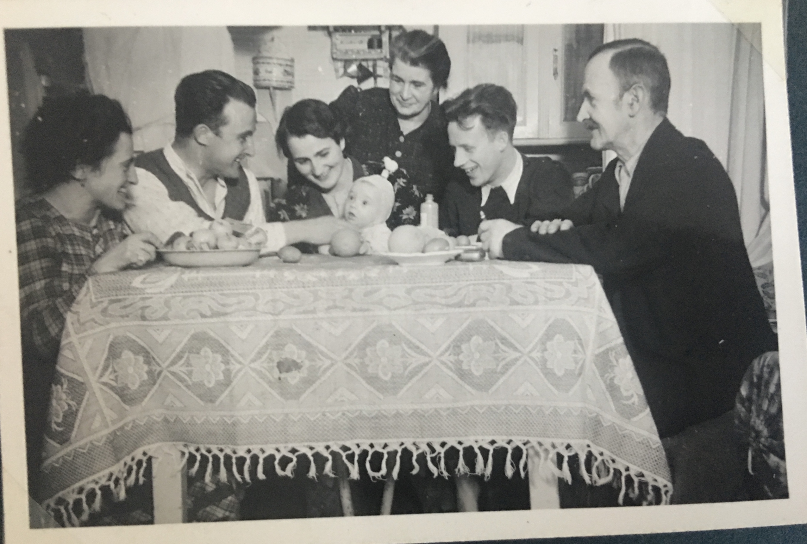
-
Das Hochzeitsbild ihrer Eltern im September 1940 mit uniformiertem Vater, und der fröhlich lachenden Herti gehalten von Mutter Herta, wohl unterhalten vom Fotografen.
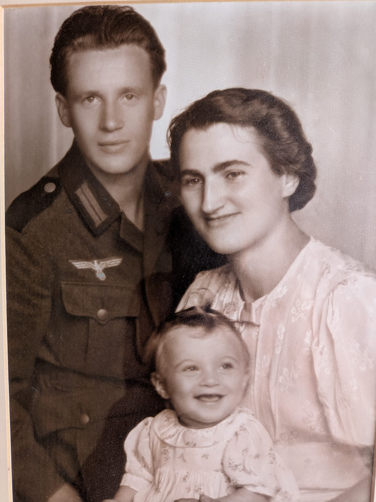
-
Hier die zweiten Weihnachten für meine Mutter im Kreise der Familie im Jahr 1940, mit dabei auch Tante Hilde und Onkel Franz, der Weihnachtsmann. Es ist das ein zentrales Bild für Weihnachtserinnerungen in der Familie aus dem Krieg.
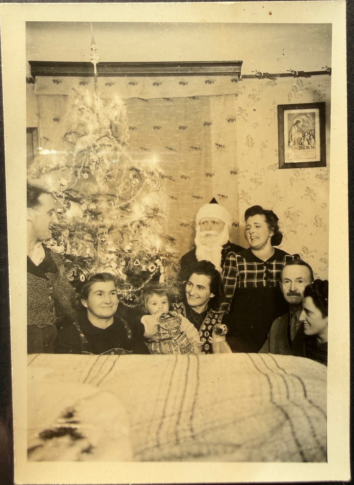
-
Mit ihrem schon charakteristischen Lachen ist hier die Dreijährige links am Autobahndreieck Mannheim zu sehen, bei einem Besuch mit ihrer Mutter an den damals in Heidelberg einquartierten Vater. Rechts sitzt sie am Fenster in der Wohnung der Eltern in der Leonfeldner Strasse in Linz.
30 Jahre später ist noch ihre Nichte Sabine in der Abwasch links gebadet worden.
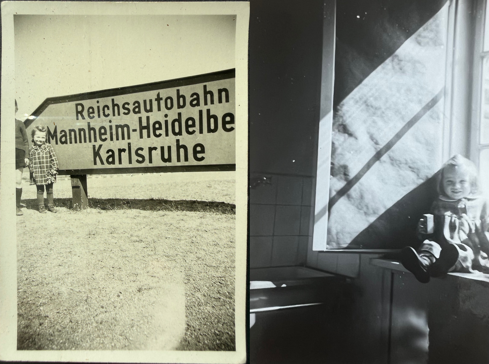
-
Im Garten des Grossvaters 1944 ist Mutter hier in der Mitte vorne, von Tante Frieda gehalten, in der nun angewachsenen Familie mit Bruder Wolfgang, gehalten von Mutter Herta, und ihrer Cousine Inge, gehalten von Tante Hilde.
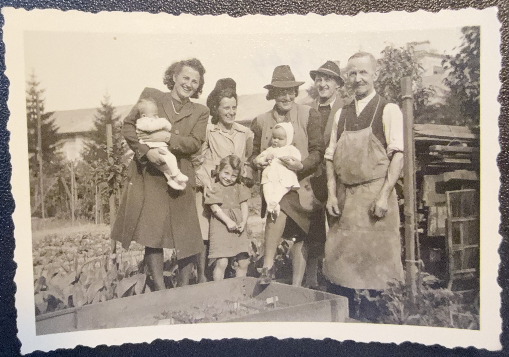
-
Links ein herziges Bild: Mutter hält ihren Bruder Wolfgang, wohl noch im Jahr 1944. Das Bild an der Pferdeeisenbahnpromenade bei der Kirche in St. Magdalena scheint 1945 aufgenommen, mit ihrem damals gerade aus dem Krieg und kurzer amerikanischer Kriegsgefangenschaft zurückgekehrten Vater, jetzt ohne Uniform.
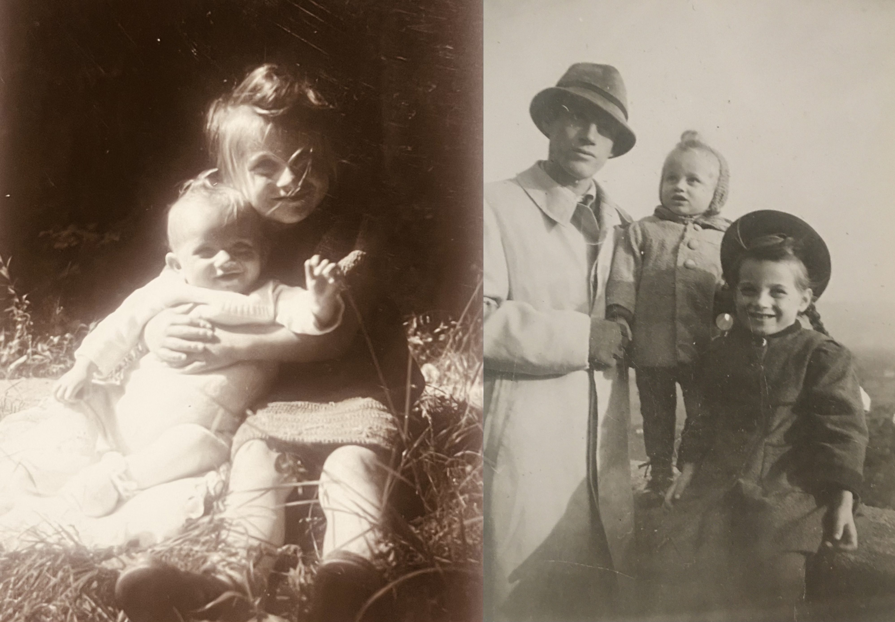
-
Weihnachten war immer zentral im Familienkalender. Hier links die 13-jährige Herta 1952 neben ihrer Grossmutter mit Eltern (ganz rechts und links hinten), Bruder Wolfgang, und einer Nachbarin mit Tochter. Rechts die 18-jährige 1957 mit Cousine Inge und Bruder Wolfgang im gleichen Wohnzimmer von Tante Frieda.
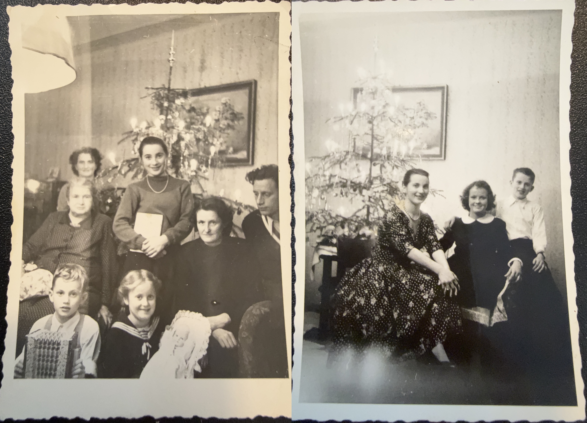
-
Meine Eltern haben sich 1954 beim Bergsteigen
auf
der Schihütte Pyhrgasgatterl der Naturfreunde, dem heutigen Rohrauerhaus, kennengelernt.
Schon in den darauffolgenden Jahren haben sie gemeinsame Touren unternommen. Hier sind sie in den mittleren 1950-er Jahren auf der Erzherzog-Johann-Hütte (3454 m), und dann am Gipfel des Grossglockers (3798 m).
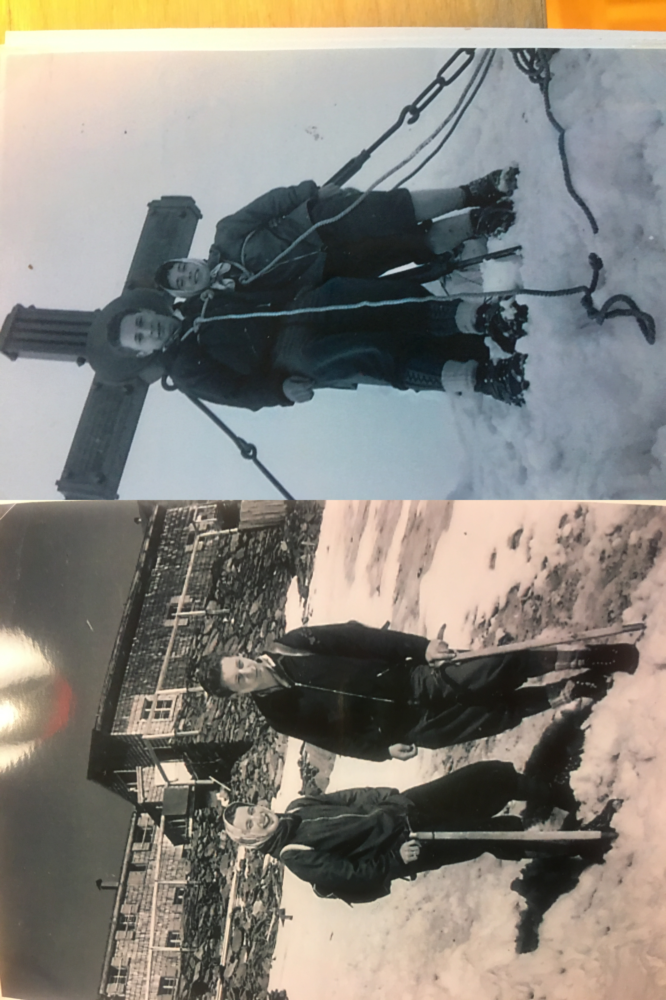
-
Ein Bild von der Verlobungsfeier 1958 von Mutter mit meinem Vater Erwin in Tante Friedas Wohnung in der Leonfeldner Strasse 120b, mit beiden Eltern und Onkel Helmut. Leider ist ihre Mutter verdeckt, aber sonst wurde ein schöner Bildmoment getroffen. Der oder die Fotografierende rief scheinbar: „Schaut’s Euch an“.
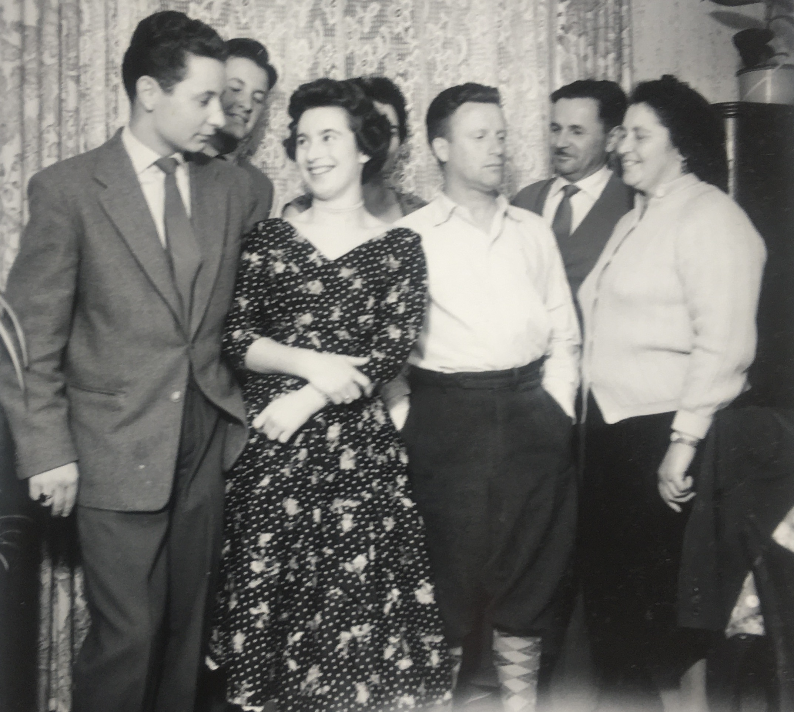
-
Ein Bild von der Hochzeit meiner Eltern im Mai 1960, der standesamtlichen Trauung. Mutter mit den Blumen leger unter dem Arm, und der Familie im Hintergrund: Kusine Inge, Tante Frieda, Schwiegervater Toni, Schwager Helmuth, Frau Ziffer, Grossmutter Clementine Fischer, und Schwiegermutter Trude.
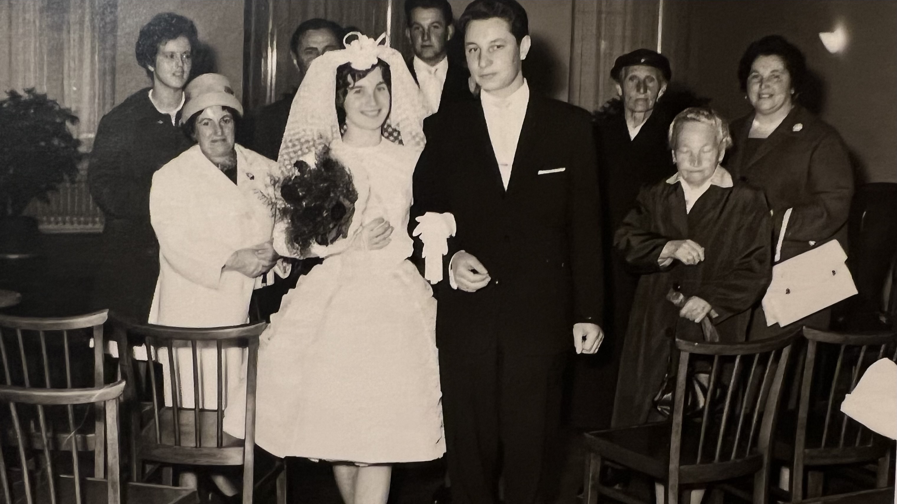
-
Hier steht Mutter 1962, wie aus der italienischen Film-Traumfabrik Cinecittà entsprungen, auf einem Schiff mit dem Vesuv im Hintergrund, sehr wahrscheinlich auf einer Fähre von Neapel zur Insel Capri. Der Meerwind ist spürbar. In dem Jahr haben meine Eltern den italienischen Stiefel mit der Eisenbahn umrundet einschliesslich von Sizilien.
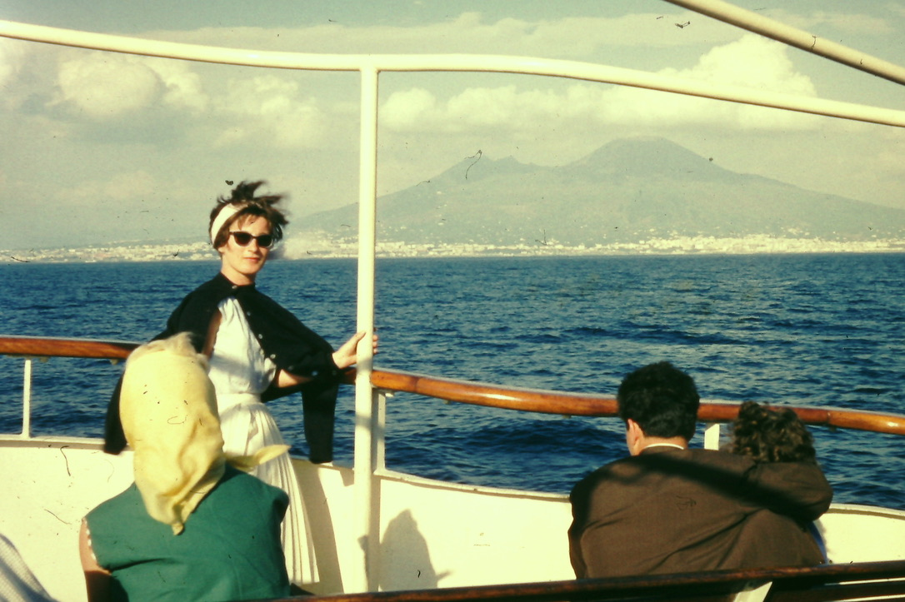
-
Im Dezember 1963 wurde ich geboren. Das linke Foto ist im Parkbad aufgenommen im Sommer 1964. Das rechte habe ich recht gerne: es ist wohl 3 Jahre später auf einer Schifffahrt nach Passau aufgenommen mit Mutter im modischen orangen Sommerkleid vor der im Wind wehenden Österreich-Flagge.
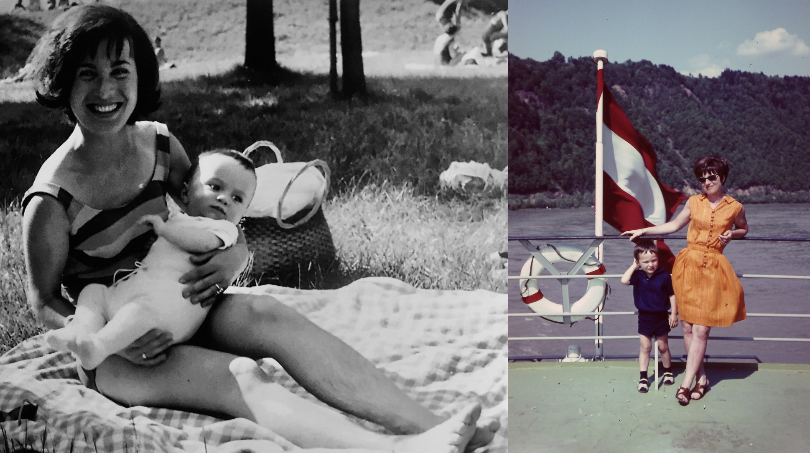
-
Hier ist Mutter ganz rechts mit der um ihre Nichte Sabine im Kinderwagen angewachsenen Familie wohl im Frühling 1969 auf der Pferdeeisenbahnpromenade in St. Magdalena, neben Sabines Eltern Renate und Wolfgang, Tante Frieda, ihren Eltern, und mir.
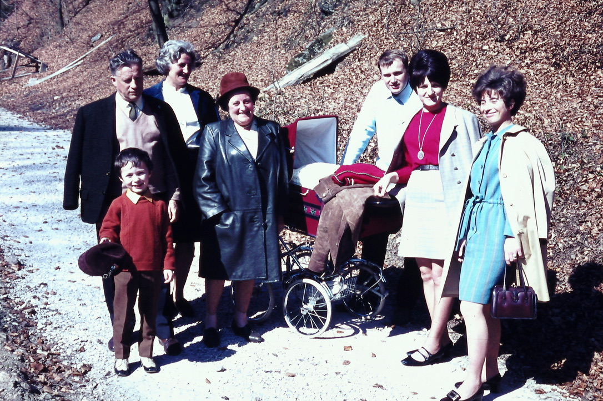
-
Hier ist Mutter 1975 im Kreise der Skilehrwarte des Bundesbahnsportvereins der Direktion Linz, sich etwas grösser machend dadurch, dass sie auf den Schischuhen von zwei Kollegen steht (der Herren Mayrhofer und Nowotny), bei einem Einfahrkurs in Bad Gastein.
Sie hat 1975 – 76 die Staatliche Lehrwarteausbildung in Hintermoos absolviert. Dabei war sie 1976 die einzige Frau in der ersten Gruppe des Kurses.
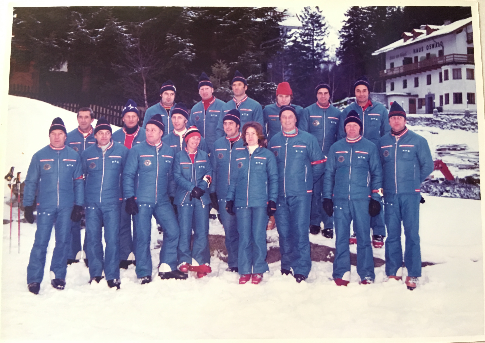
-
Später war Mutter regelmässig Kursleiterin von Skikursen in Bad Goisern und in Krimml. Auf diesem Bild steht sie mit ihrer Kindergruppe (und Vater als Helfer) aber vor der Schönmoos-Alm in Krimml (wo die Schlussabfahrt durch den Wald ein grosses Erlebnis für die Kinder war).
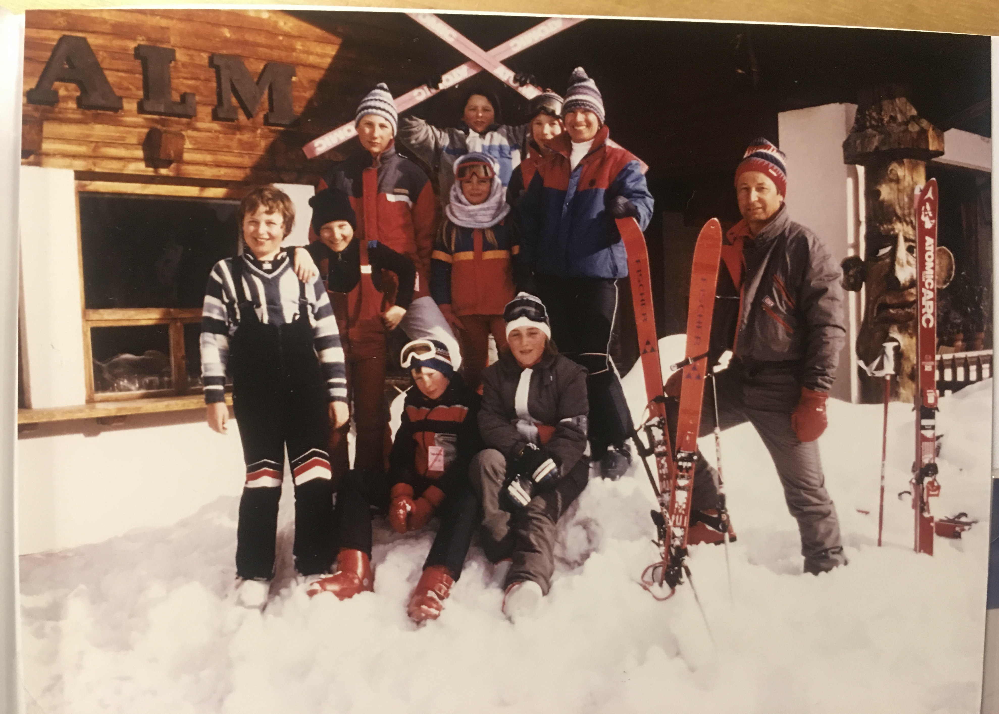
-
Dieses Selbstauslöser-Foto zeigt uns vor dem Grossvenediger (3657 m) zwischen Salzburg und Osttirol, den wir 1977 bestiegen haben. Nach der Gipfelbesteigung stehen wir hier auf dem Gipfel des Kleinvenedigers (3468 m).
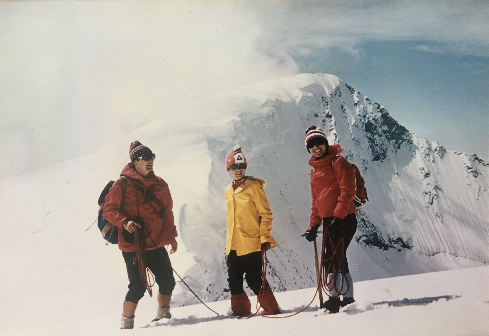
-
Hier ist Mutter in den frühen 1980-er Jahren an der Arbeit im Institut für Technologie von Dr. Sternad am Froschberg in Linz, wofür sie von 1981 bis 1995 gearbeitet hat, als Sekretärin, verantwortlich für die Lohnverrechnung, und tägliche Managementaufgaben, auch für die Mitarbeiter. Auf dem Bild sind nur der Drucker und die grosse Kugelkopfschreibmaschine zu sehen, aber noch kein PC.
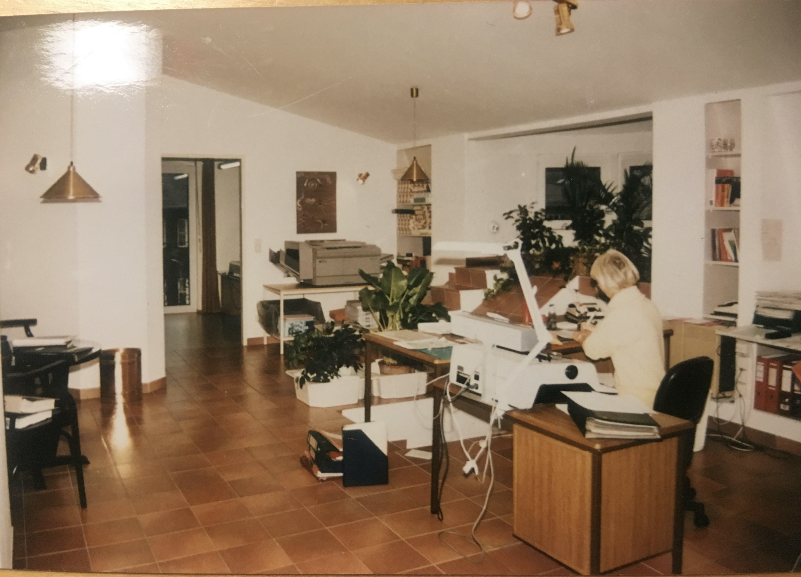
-
Zwei Weihnachtsbilder: dieses 1987 mit Mutter ganz hinten in der Mitte, in unserer Wohnung am Froschberg, als Inge gekommen war, und Klaus zum ersten Mal dabei gewesen ist.
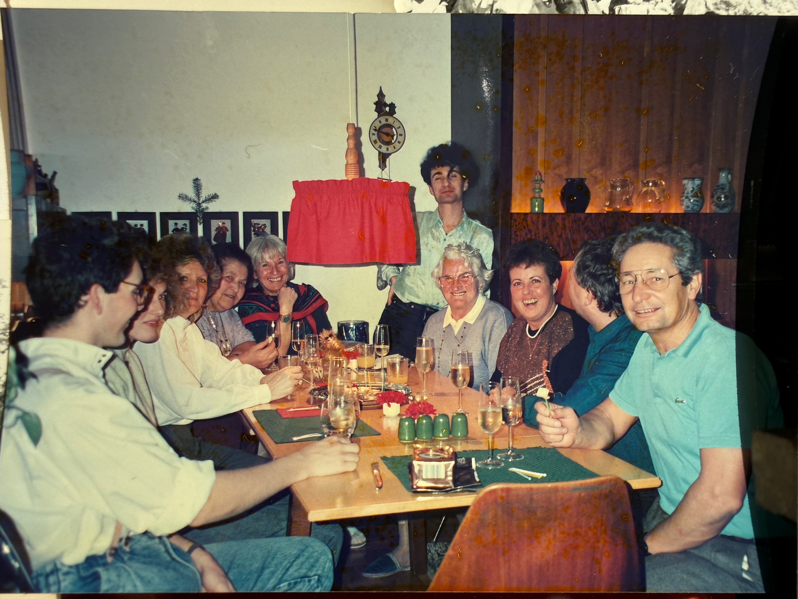
-
Hier steht Mutter 1988 hinten in der Mitte vor dem Vorhang. Mutters Bruder Wolfgang hat grade das Weihnachtsgeschichtenbuch in der Hand, das sie begonnen und organisiert hat, woraus er uns gleich seine lustige Geschichte von der Rutschpartie im Schnee in den Bach von Opa und Hund Peter in den 1950-er Jahren vorlesen wird.
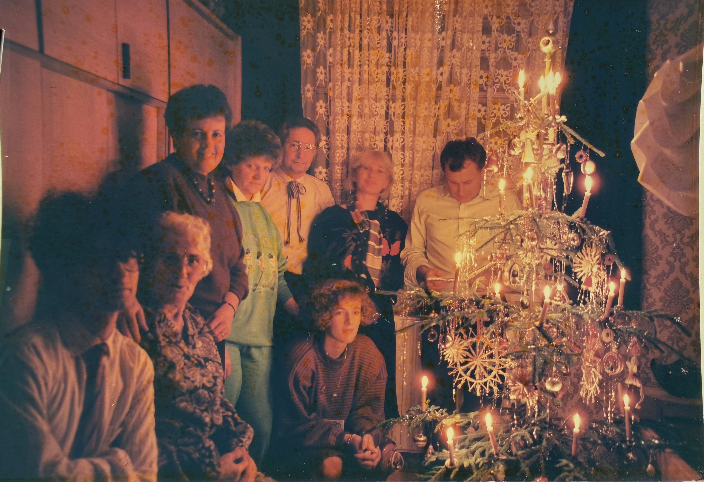
-
Hier drei Passbilder von Mutter: das Lehrmädchen 1954, die Bürokauffrau 1965, und die Office-Managerin 1988. Modisch bewusst war und blieb sie immer.
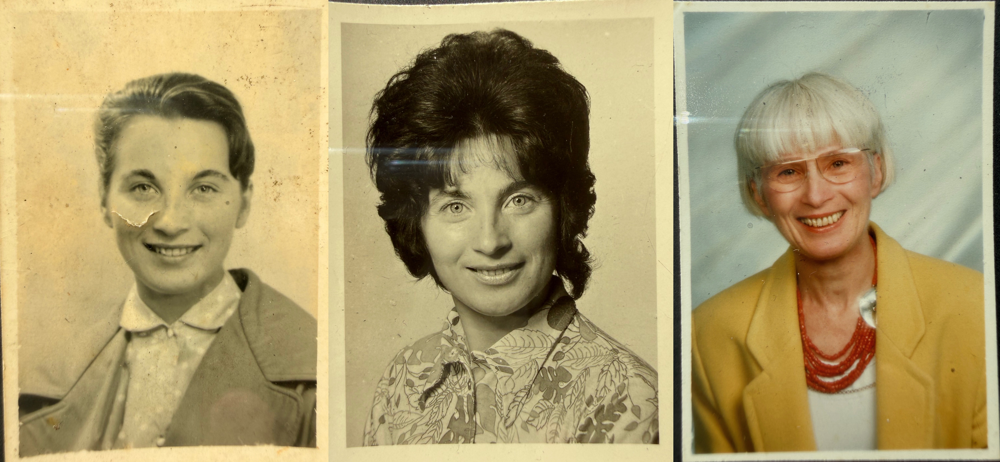
-
Das ist ein Foto ähnlich der Parte aus 1992, als meine Eltern nach der Pensionierung meines Vaters Bergsteigen waren in den Dolomiten in Südtirol. Im Hintergrund der Paternkofel (2744 m), den sie auch bestiegen haben.
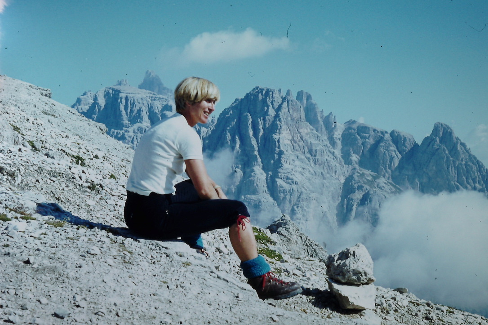
-
Nach ihrer eigenen Pensionierung 1995 ging Mutter nicht in den Ruhestand, im Gegenteil. Sie richtete sich ein Büro in der Nähe unserer Wohnung ein für die astrologische Beratung von Rat suchenden Menschen. Nach 3 – 4 Jahren allerdings fand sie, dass sie damit Leuten nicht gut genug helfen konnte. Sie fasste den Entschluss das zu tun, was ihr als junges Mädchen verwehrt worden war, nämlich zu studieren. Und zwar Psychologie.
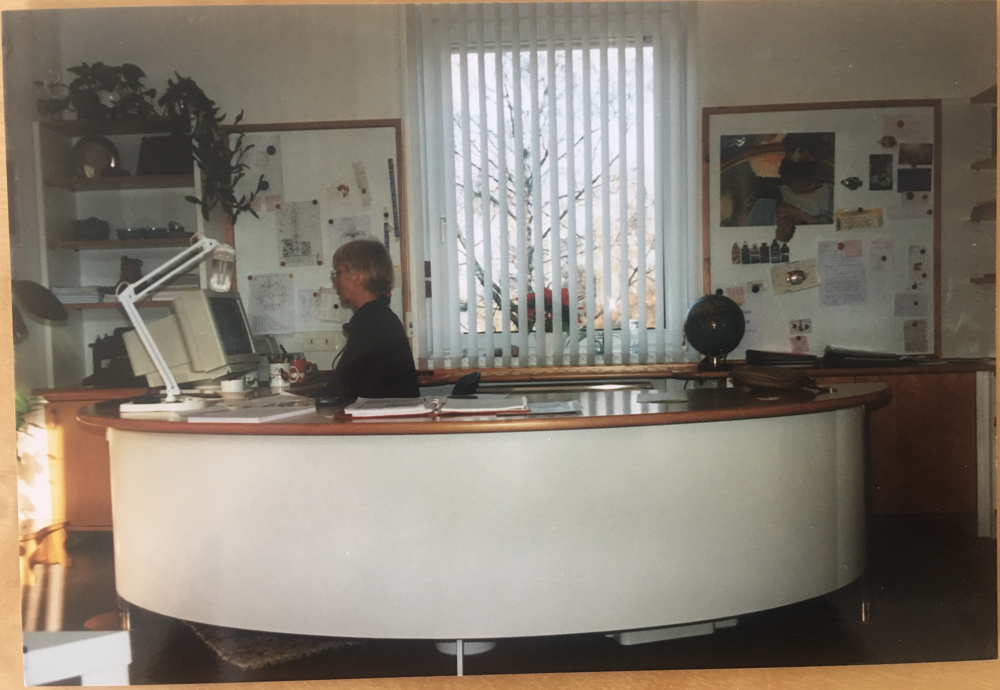
-
Dazu musste sie erst die Studienberechtigungsprüfung absolvieren, inklusive dem Nachholen von Mittelschulmathematik, was für statistische Auswertungen später wichtig werden sollte. Und sie tat das alles selbst noch in Wien, wo das Aufnahmeverfahren am schwierigsten zu bestehen ist. Mit viel Ausdauer hat sie das geschafft.
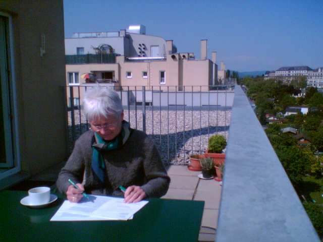
-
Hier sehen wir Mutter mit Studienkollegen Roman und Elisabeth bei einer den UniBrennt Demonstrationen am Schottentor vor der Universität rund 2009. Da ging es auch um Studiengebühren, die sie als Seniorenstudentin schliesslich doch eine Zeitlang zahlen musste.
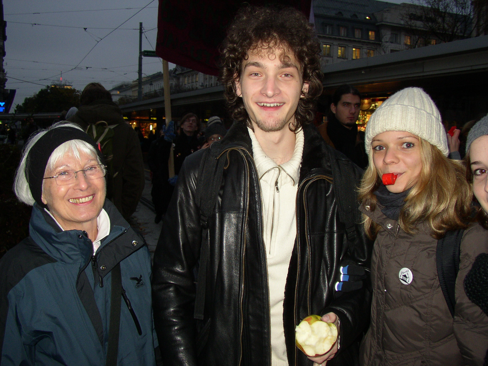
-
Mutter ist 2015 im Alter von 76 Jahren mit dem Studium fertig geworden, mit einer Diplomarbeit über "Biographische Intelligenz", an der sie sicher 2 Jahre gearbeitet hatte, mit 100 Tiefeninterviews und statistischer Auswertung. Ihre Betreuerin Prof. Judith Glück schrieb im Gutachen:
„Frau Grabmayer hat mir äußerst eindrucksvoll die Potentiale lebenslangen Lernens vor Augen geführt, durch ihre Motivation und ihren Enthusiasmus, ihre Intelligenz und rasche Auffassungsgabe und ihre Bereitschaft, sich auch mit komplexen Sachverhalten und Auswertungsmethoden auseinanderzusetzen. Zugleich muss ich aber auch anmerken, wie außergewöhnlich und beeindruckend eine solche Leistung ist.“
Noch vor 2 Wochen schrieb Prof. Glück mir per Mail:
„[Das war] eine unglaubliche Willensstärke und Leistung, und das alles mit ihrer freundlichen, charmanten, gar nicht überheblichen Art.“
Auf dem Bild bekommt sie gerade die Diplomurkunde zur Frau Magistra phil. vom Dekan Prof. Weber im Februar 2016.
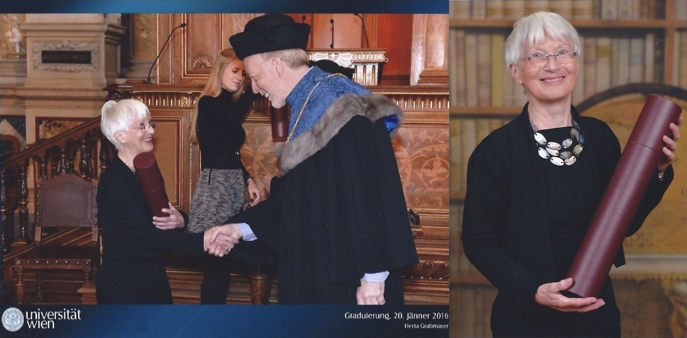
-
Hier ein Familienbild von uns aus 2017 bei einer Linzer Fotografin zu der Mutter den Vater und mich gebracht hatte, immer vorausschauend, wofür man Photos brauchen wird können.
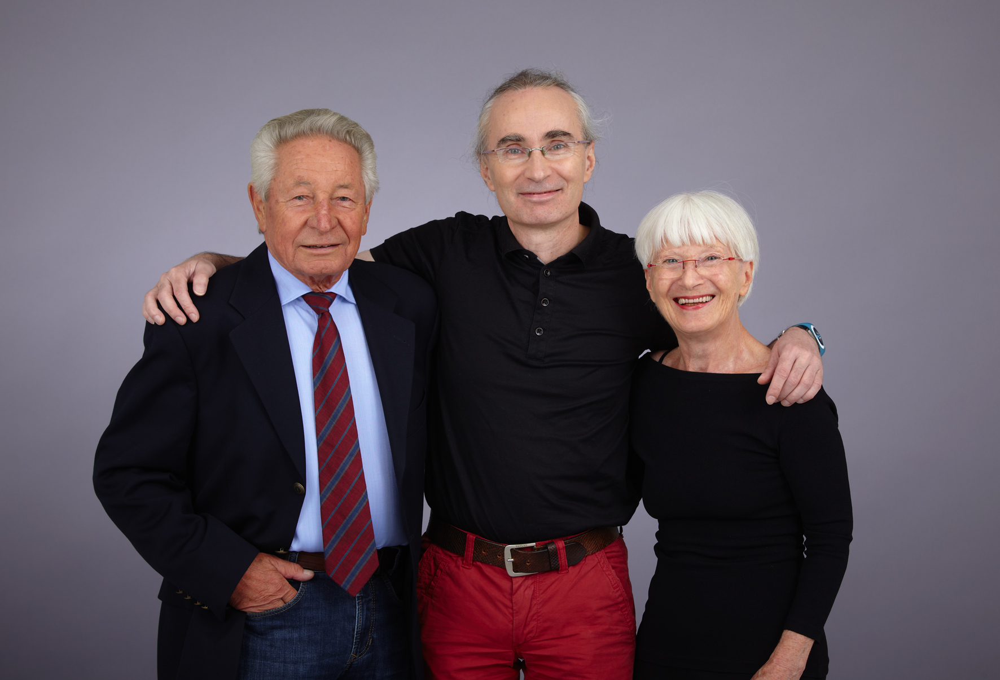
-
Anlässlich ihres 80. Geburtstags hat Mutter die Familie und Bekannte und Freunde (hier auch Mutters nahe Nachbarn Hermi und Sepp im Hintergrund) eingeladen zu einer Feier auf die Burg Plankenstein, exzellent organisiert. Wir sind hier in der Wallfahrtskirche St. Gotthard im Texingtal, nach einer Führung.
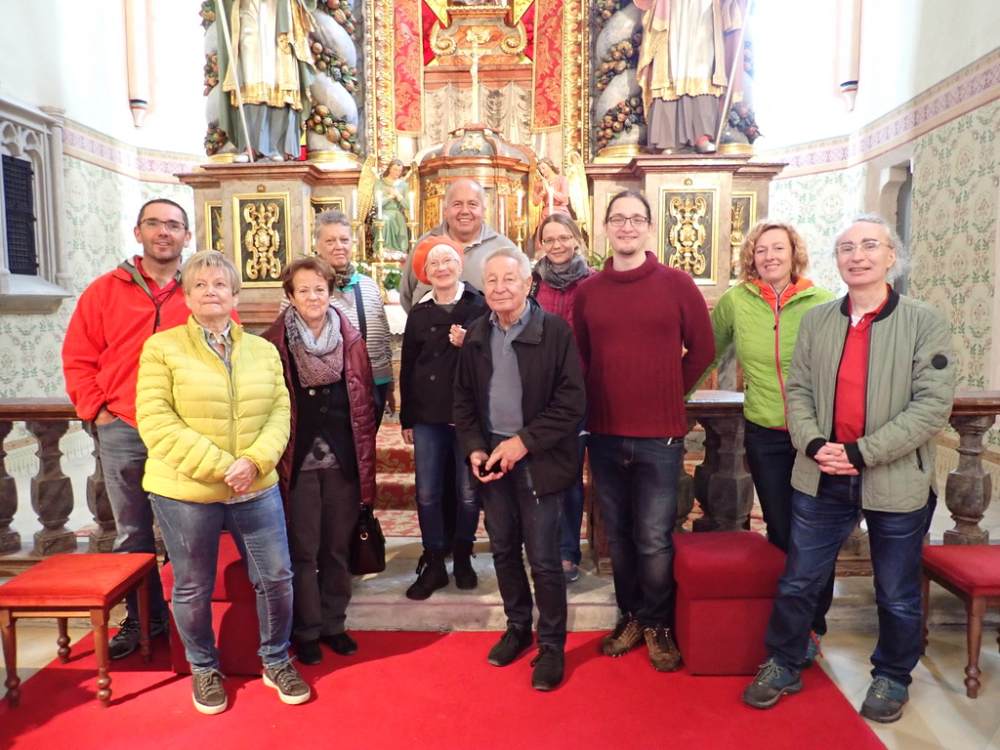
-
Das nächste Projekt Mutters nach dem Studienabschluss war: von Wien nach Linz zu wandern, in Mehrtages-Etappen verteilt über etliche Monate. Die Karte links ist aus ihren Standortmeldungen zusammengestellt. Nach dem Erreichen von Linz 2017 ist sie noch weiter ins Salzkammergut gewandert. Rechts sehen wir sie auf dem Schoberstein bei Weissenbach am Attersee, mit im Hintergrund den Schafberg, den sie dann schliesslich auch noch über den Himmelspfortensteig erklommen hat.
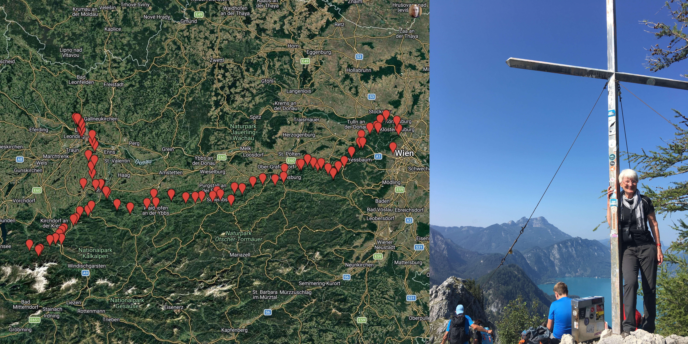
-
Schon lange zuvor, und auch danach ist Mutter mit ihrer Studienkollegin Elisabeth gewandert, zuerst rundum Wien, bis zur Rax, und zuletzt in der Wachau. Über dieses Foto schreibt Elisabeth:
„Es ist entstanden auf der 5. Etappe unseres Kyselak-Wanderwegs. Es war die Etappe von Traismauer nach Furth Göttweig am 04.09.2021. Hier haben wir eine Rast bei der "Wetterkreuzkirche" gemacht. Wir mussten lachen und schmunzeln, weil die Kirche erbaut wurde, um vor Blitzeinschlägen zu schützen - dabei ist sie selbst 2x abgebrannt.“
„Vor der Kirche hat uns ein Mann gefragt, ob wir Wasser hätten. Herta fragte,
wofür. Der Mann meinte, um den Mistkübel zu löschen (es rauchte nämlich leicht aus dem
Mistkübel). Da unsere Wasservorräte begrenzt waren, sagte Herta wie aus der
Pistole geschossen "Dafür geb ich mein Wasser nicht her!“
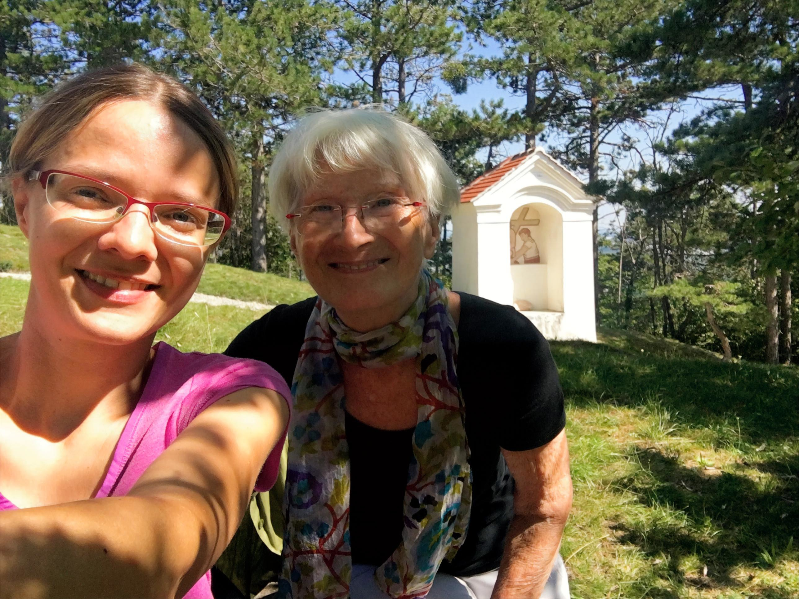
-
Hier ist Mutter inmitten ihrer langjährigen Samstags-Frühstücksrunde zu sehen, die ihr viel bedeutet hat, zum letzten Mal mit Frau Quas, Frau Rochhart, Frau Heyduk, Frau Punzet, Frau Haider, und Frau Nowotny. Viele weitere schöne Bilder von Unternehmungen zusammen wie Theaterbesuchen, und Fahrt zum Ö1 Klassik Treffpunkt wären zeigenswert. Ich kann leider nur eine Stimme zitieren (Frau Quas):
„Umsomehr haben wir uns gefreut, dass sie bei unserem Treffen am 13.6. dabei war. Bei diesem Treffen waren alle anwesend - was ja eher selten vorkommt - und es war sozusagen ihr Abschiedsbesuch im Nachhinein gesehen. Wir haben mit ihr viele schöne und lustige Stunden verbracht, die ich immer in Erinnerung behalten werde.“
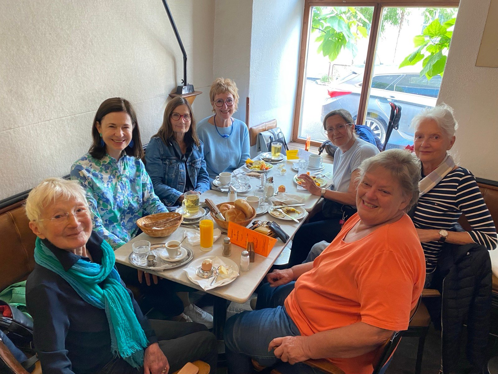
-
Am Tag vor ihrem Tod habe ich Mutter noch zweimal besucht. Auf dem Bild scherzen wir darüber, dass ich das Telefon schief halte, und patschert bin. Wir bemühen uns mit Fröhlichkeit um Normalität. Zwei Minuten später bin ich gegangen. Abschied haben wir schon genommen, aber nur „bis morgen“. Ich dachte das sicher, und ich glaube, sie auch. Und ja, ich hab sie noch sehen können am nächsten Morgen, sie mich aber leider nicht mehr.
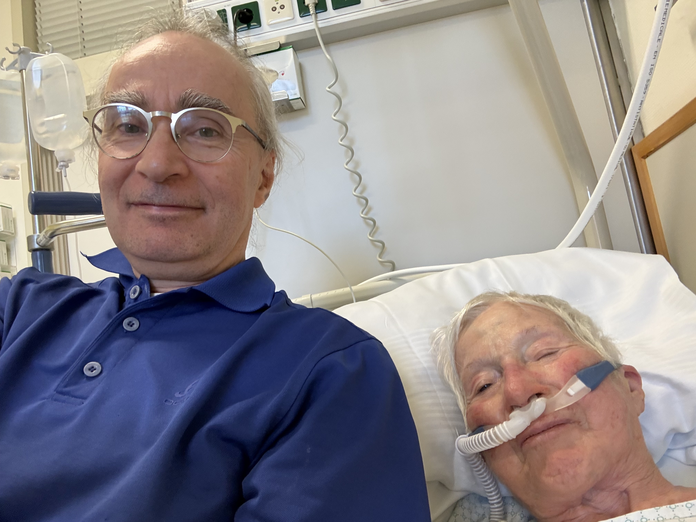
Zugefügtes Bild
-
Mit grossem Dank an und zu Ehren der 6 Schulkolleginnen,
die mit Mutter 1949 – 54 in zwei Hauptschulen in Linz–Urfahr
(Jahnschule und Harbachschule) gegangen sind
und zur Verabschiedung Mutters gekommen sind,
möchte ich hier noch ein nettes Bild zufügen,
das ich leider in meinem Vortrag nicht gezeigt habe.
Es ist von einem Schulausflug 1954 zum Laudachsee unter dem Katzenstein im Hintergrund nahe dem Traunstein und Gmunden. Mutter ist die zweite von links.
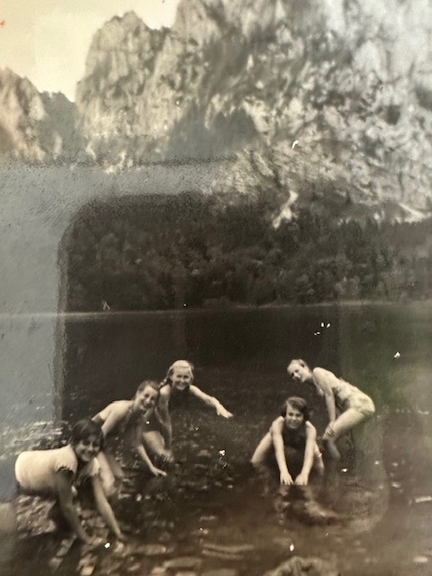
Clemens Grabmayer
/
www:
https://clegra.github.io
/
mailto:
c one dot
a one dot
grabmayer one at
gmail one dot
com
/
Last modified: Fri 28 Aug 2026 21:23 CEST
/